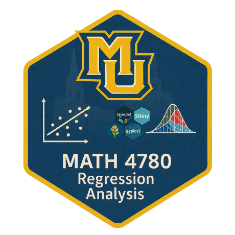

(A <- matrix(data = 1:6,
nrow = 2, ncol = 3)) [,1] [,2] [,3]
[1,] 1 3 5
[2,] 2 4 6class(A)[1] "matrix" "array" MATH 4780 / MSSC 5780 Regression Analysis
Marquette University
MATH 4780 - Fall 2026
But what is the geometrical meaning of matrices?
3Blue1Brown, Essence of Linear Algebra, Chapter 3
Are \({\bf v}_1 = (1, 1)'\) and \({\bf v}_2 = (-3, 2)'\) linearly independent?
Ways to check linear independence:
solve the homogeneous linear system \(\begin{bmatrix} 1 & -3 \\ 1 & 2 \end{bmatrix}\begin{bmatrix} c_1 \\ c_2 \end{bmatrix}=\begin{bmatrix} 0 \\ 0 \end{bmatrix}\) for \(c_1\) and \(c_2\).
check if \(\text{det} \left( \begin{bmatrix} 1 & -3 \\ 1 & 2 \end{bmatrix} \right)\) is non-zero.
The rank of a matrix \({\bf A} = \begin{bmatrix} {\bf a}_1 & {\bf a}_2 & \cdots & {\bf a}_m \end{bmatrix}\) is the number of linearly independent columns (dimension of the column space).
If \(k\) of the \(m\) column vectors \({\bf a}_1, {\bf a}_2, \dots, {\bf a}_m\) are linearly independent, the rank of \({\bf A}\) is \(k\).
The remaining \(m-k\) columns of \({\bf A}\) can be written as a linear combination of the \(k\) linearly independent columns.
[,1] [,2] [,3]
[1,] 1 4 7
[2,] 2 5 8
[3,] 3 6 9[1] 2Can you see why the rank is 2, meaning that one column can be written as a linear combo of the other two?
Addition: \({\bf A + B}\) is adding the corresponding elements together \(a_{ij} + b_{ij}\).
\({\bf A}\) and \({\bf B}\) must have an equal number of rows and columns.
\({\bf A}{\bf B} \ne {\bf B}{\bf A}\) in general.
\(({\bf A}{\bf B})' = {\bf B}'{\bf A}'\).
\[{\bf A} = \begin{bmatrix} 1 & 2 \\ 2 & 5 \\ \end{bmatrix} \quad {\bf A}' =\begin{bmatrix} 1 & 2 \\ 2 & 5 \end{bmatrix}\]
The trace of \({\bf A}_{n \times n}\), denoted by \(\text{tr}({\bf A})\), is defined as \[\text{tr}({\bf A}) = a_{11} + a_{22} + \dots + a_{nn}\]
\(\text{tr}({\bf A}{\bf B}) = \text{tr}({\bf B}{\bf A})\)
3Blue1Brown, Essence of Linear Algebra, Chapter 14
Eigen-decomposition: Any symmetric matrix \({\bf A}_{n \times n}\) can be decomposed as \[{\bf A} = {\bf V\boldsymbol \Lambda V'}\]
\(\boldsymbol \Lambda\) is a \(n \times n\) diagnonal matrix whose elements are eigenvalues \(\lambda_j\) of \({\bf A}\) \[\boldsymbol \Lambda= \begin{bmatrix} \lambda_1 & 0 & \cdots & 0 \\ 0 & \lambda_2 & \cdots & 0 \\ \vdots & \vdots & \ddots & \vdots \\ 0 & 0 & \cdots & \lambda_n \end{bmatrix}\]
\({\bf V} = [{\bf v}_1 \quad {\bf v}_2 \quad \dots \quad {\bf v}_n]\) is a \(n \times n\) orthogonal matrix whose columns are the eigenvectors of \({\bf A}.\)
Let \({\bf A} \in \mathbb{R}^{n \times n}\) be a square matrix with eigenvalues \(\lambda_1, \ldots, \lambda_n\).
